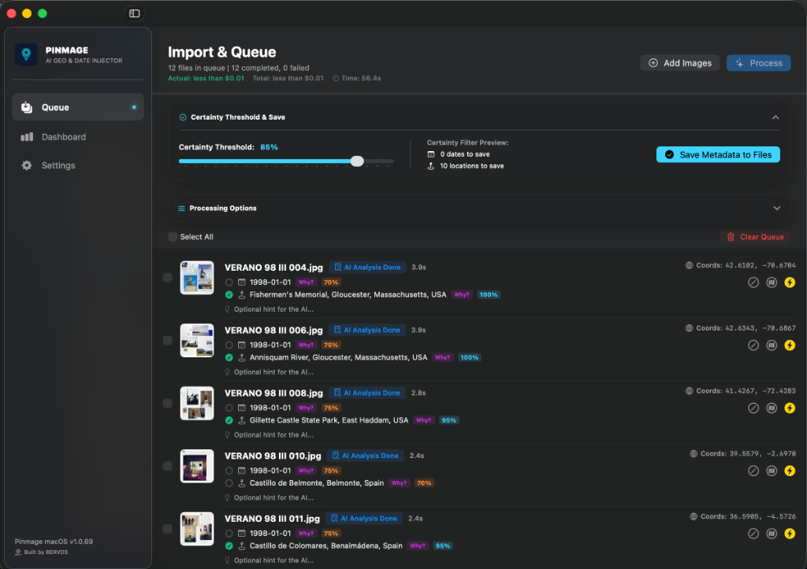

Pinmage automatically analyzes scanned photo albums or individual photos using AI to deduce dates and places, writing them directly into native EXIF & GPS image metadata.
Designed for scanned archives, family photo albums, and digital memory preservation.
Pinmage leverages multimodal Google Gemini AI models to scan the visual content of your photos, finding visual clues, text, landmarks, and styles to identify when and where they were taken.
Pinmage turns the descriptive location names found by the AI (e.g. "Eiffel Tower, Paris") into precise GPS Latitude and Longitude coordinates using Apple's native geocoding engine.
For scanned album pages with missing dates, Pinmage forward-propagates dates across chronological order so files stay structured and perfectly organized in Apple Photos or Lightroom.
Configure a certainty threshold. Pinmage highlights deduced values and lets you review and toggle save checkboxes for dates and locations before writing changes.
Plug in your own Google Gemini API Key or use a local Ollama installation for completely unlimited usage. Pinmage tracks input/output tokens and displays exact session and cumulative cost tracking.
No user account signups. Pinmage runs 100% locally on your Mac with secure, sandboxed directories. Your photos never leave your machine.
A look at Pinmage's clean, native macOS interface and workflow.

Drag and drop albums, see original EXIF coordinates, and queue them for AI date/location deduction.
Set your custom instructions, model preferences, certainty thresholds, and local directory structures.
Save written EXIF metadata directly into your files using customizable filename patterns.
Drag and drop scanned pages, directories, or individual image files into the processing queue list.
Insert your Google Gemini API Key, or configure a local Ollama model to run AI analysis completely free of cost.
Start processing. Pinmage reads, resolves dates and locations, and saves metadata-rich copies instantly.
$9.99
Pay once, own forever. No monthly subscriptions, no hidden fees, and completely unlimited usage if you use your own Gemini API Key or local Ollama installation.
Photos App Plugin
Direct integration with Apple Photos library is currently in development to allow processing albums directly without file exports.